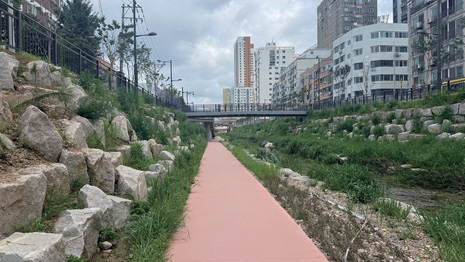
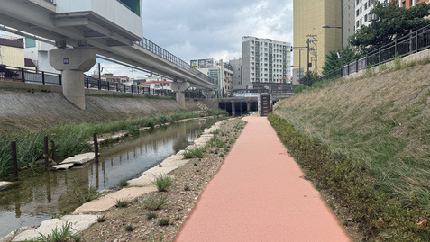
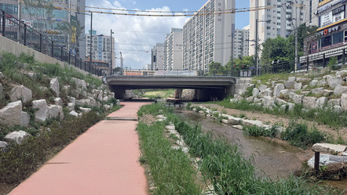
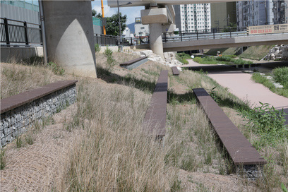
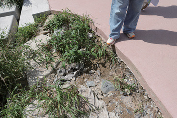

굴포천을 찾는 사람들은 쉬러 왔지만,
산책로에는 그늘도 앉을 자리도 없었다
복원된 굴포천 산책로를 찾는 사람의 첫째 목적은 휴식이었다. 실험은 이 길에서 그늘과 자리를 만들어 주면 지나치던 사람이 멈춰 머무는지를 물었다.
실험 구간은 인천 부평구 부평동 88-5 일원, 굴포천 제1교량(부흥교) 옆 산책로다. 북서쪽으로 부평여자고등학교, 동쪽으로 부평동초등학교가 있고, 부평시장역에서 걸어서 닿는다. 하천 폭은 약 35m로, 물길 양쪽에 산책로가 나란히 이어지고 교량이 그 위를 가로지른다. 도시재생 홍보관에서 출발하면 처음 만나는 교량 하부가 이곳이다. 교량 하부는 체험 프로그램과 이어 쓸 수 있는 자리로도 꼽혔다.
7월 29일부터 9월 29일까지 현장조사에서 낮과 밤, 평일과 주말의 산책로를 기록하였다. 교량 하부는 산책로에서 유일한 그늘이었고, 그 밖의 구간은 해를 피할 곳 없이 열려 있었다. 보행자는 양산을 쓰고 걷다가 교량 하부로 향했고, 머무는 사람은 콘크리트 그늘에 몰렸다. 보행 동선이 끊기는 곳과 배변 방치·악취 같은 쾌적성 문제도 함께 기록하였다. 산책로 이용자는 걷는 사람, 달리는 사람, 시니어로 나뉘었다.
8월 25일 보행자 설문에서 방문 목적 1위는 휴식(35%)이었다. 그러나 쉬려는 사람에게 산책로가 내준 것은 교량 하부의 콘크리트 그늘뿐이었고, 그곳에서도 대부분은 그냥 지나갔다. 머문 사람의 평균 휴식 체류는 약 20분이었다. 9월 17일(목)과 10월 17일(토)에는 실험과 같은 시간대(10~11시, 15~16시)에 사전조사를 하여 실험 전 체류를 남겼다. 그늘이 한 곳뿐인 산책로에서 휴식이라는 방문 목적은 교량 하부 하나에 기대고 있었다.
부평구의 생태하천 연구에서 출발한 이 실험은 문제를 ‘하천공간의 체류·감각 경험 부족과 장소매력 저하’로 정의하였다. 해법은 두 단계로 나누었다. 1차는 햇빛 산책로에 파라솔 그늘과 머무름 자리, 책·소리·향을 두는 공간 개입이고, 2차는 그 시설을 그대로 둔 채 청년작가·시민·대학생이 스툴을 함께 꾸미는 참여 개입이다. 두 단계 모두 고정 설치 없이, 실험이 끝나면 산책로가 그대로 돌아가는 방식으로 짰다.
 사전 현장조사
사전 현장조사교량 하부 그늘·이용 상태 기록

사전 현장조사개방 산책로 기록
(낮·밤·평일·주말) · 보행자 설문 8.25
사전조사 9.17(목) · 10.17(토)
- 이용자 보행 · 러닝 · 시니어
- 참여 청년작가 2명 · 인천대 4팀 19명 · 시민
- 하천 폭 약 35m · 양쪽 산책로
- 실험 구간 교량 상류·하류 각 약 14m
- 체류 교량 밑 체류 15% · 약 20분 미만
- 쾌적성 동선 단절 · 배변 방치 · 악취

교량 밖 산책로
제1교량 방향
풀숲 속 데크
산책로 가장자리 사면